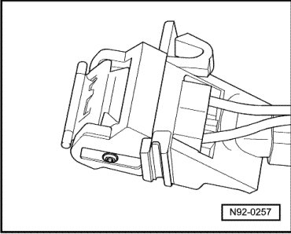

Windshield Washer System Spray Nozzles
Windshield Washer System Spray Nozzles
CAUTION!
Do not use solid objects to clean the spray nozzles!
• Spray nozzles are pre-adjusted and can only be adjusted in height.
• If contamination in the spray nozzle causes an uneven spray pattern, remove the nozzle and rinse it with water in the opposite direction of the spray. It is permissible to further blow through in opposite direction of spray with compressed air.
Removing
- To remove spray nozzle, press jet to the side from left and remove toward front out of hood.

- Disconnect hose and harness connector for Left Washer Nozzle Heater (Z20) and Right Washer Nozzle Heater (Z21) from washer nozzle.
Installing
- To install, connect hose and harness connector for Left Washer Nozzle Heater (Z20) or for Right Washer Nozzle Heater (Z21).
- Insert washer nozzle into installation opening and let engage.
- Check and adjust spray nozzles --> [ Windshield Washer System Spray Nozzles, Adjusting ] Adjustments.